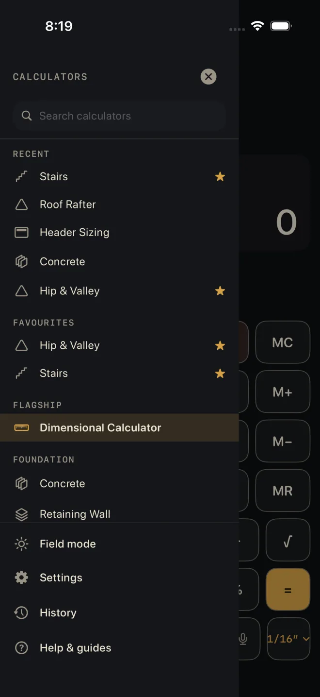
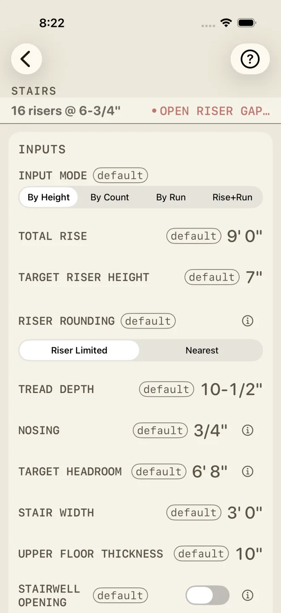

Field mode
Field mode is for working outside. It turns the whole app to a light, high-contrast palette you can read in direct sun, and makes the keys and type bigger so you can hit them with gloves on. The Settings screen puts it in one line: "Bigger keys, higher contrast — for gloves and sunlight."
Step by step
The quick way, mid-job:

2- Open the drawer.
- Tap Field mode at the bottom. The sun fills in and ON shows beside it. Tap again to turn it off.
The same switch is in Settings ▸ FIELD ▸ Field mode, next to Key haptics. Either one changes the other; the setting is kept until you change it.
What changes


- Light palette. The app switches to its sunlight colours on every screen and every sheet. With Field mode off, the app follows the phone's own light or dark appearance.
- Bigger keys and type. Field mode sets a floor under the text size. Keys, labels and the display all grow to it. If your phone's text size is already set larger than the floor, yours is kept — Field mode never makes anything smaller.
- Less on screen at once. Bigger rows mean more scrolling, and the status line under the calculator's name stacks onto two lines instead of one. Compare the two shots: the same screen fits two rows fewer.
- The numbers do not change. Field mode is only how the app looks.
These help pages follow Field mode too. Turn it on and they go light with the rest of the app.
Field mode is free.
If it doesn't work
- The keys did not get bigger. Your phone's text size is already at or above Field mode's floor. You still get the light palette.
- The app is stuck in light colours. Field mode is on. Turn it off in the drawer and the app goes back to following the phone's appearance.
Related
- Voice entry — another way to keep your gloves on
- Bosch laser measure
- Finding a calculator